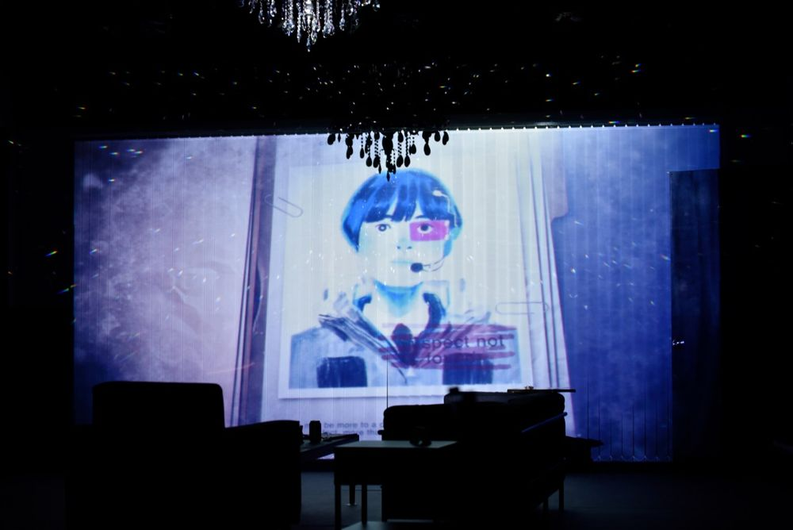

Green Pig > Archive > A Rainbow Made of Steel

Moving between a Pyongyang reunified under a federal system in 2048 and the present of 2017, the story digs into the desires and conflicts tangled between South and North. Through a tightly constructed play in which the spell of capitalism and human greed are knotted and unravelled, it asks again about the reality of division and our future. Winner of the 7th Byeoksan Playwriting Award.
2019.10.5–13 / Hongik Daehangno Art Center, Small Theater - 7th Byeoksan Playwriting Award winner
Playwright: Lee Jungse
Director: Yoon Hansol
Assistant director: Jung Yujin
Set: Shin Seungryeol
Lighting: Noh Myeongjun
Illustration: Kwon Minji
Video: Yoon Mincheol
Sound: Jung Hyesu
Music: Ombre
Make-up: Jang Gyeongsuk
Costumes: Kim Gyeonghui
Graphic design: Workroom
Producer: Hwangbo Yeon, Lee Minjeong
Lighting operator: Kim Wontae
Cast: Kim Cheongsun, Choi Jihyeon, Jang Suho, Jung Yanga, Kwon Taegeon, Choi Jiyeon, Jung Yeonjong, Lee Jiwon, Yoo Seongjin, Choi Munseok, Cho Eunwon
2019.11.21 Audience review (Naver blog)
2019.10.18 Criticism, Kim Okran (Naver blog)
2019.10.11 Audience review (Naver café)
2019.10.7 Audience review (Naver blog)
2019.10.5 Audience review (Naver blog)
2019.10.4 Article (Edaily)
2019.9.16 Article (New Daily)
Previous: The Way of Story, the Way of Dance – Gong Ok-jin's Byeongsin-chum | Next: Phantom Neuro
Back to the archive | Any work
Published 2026.11.13